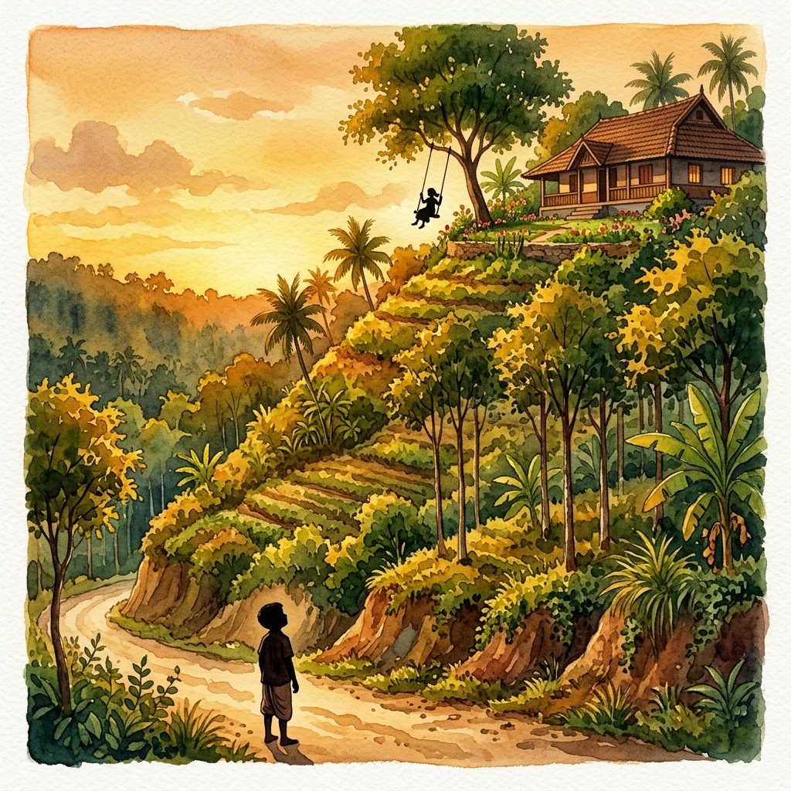
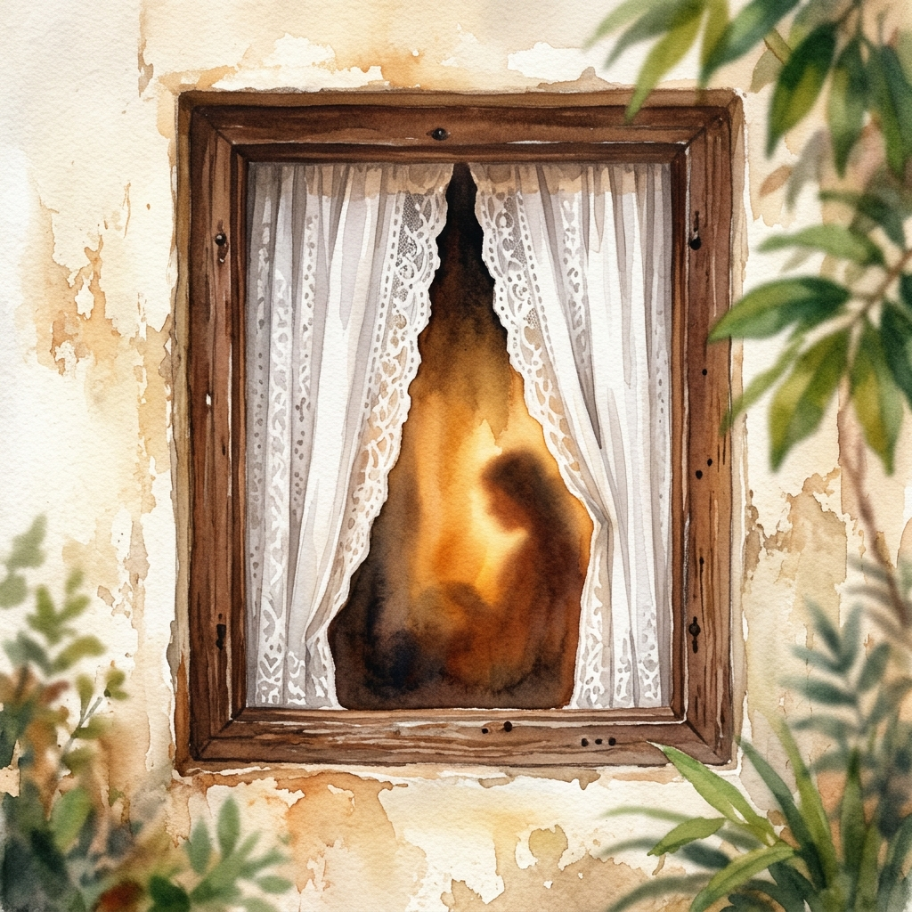
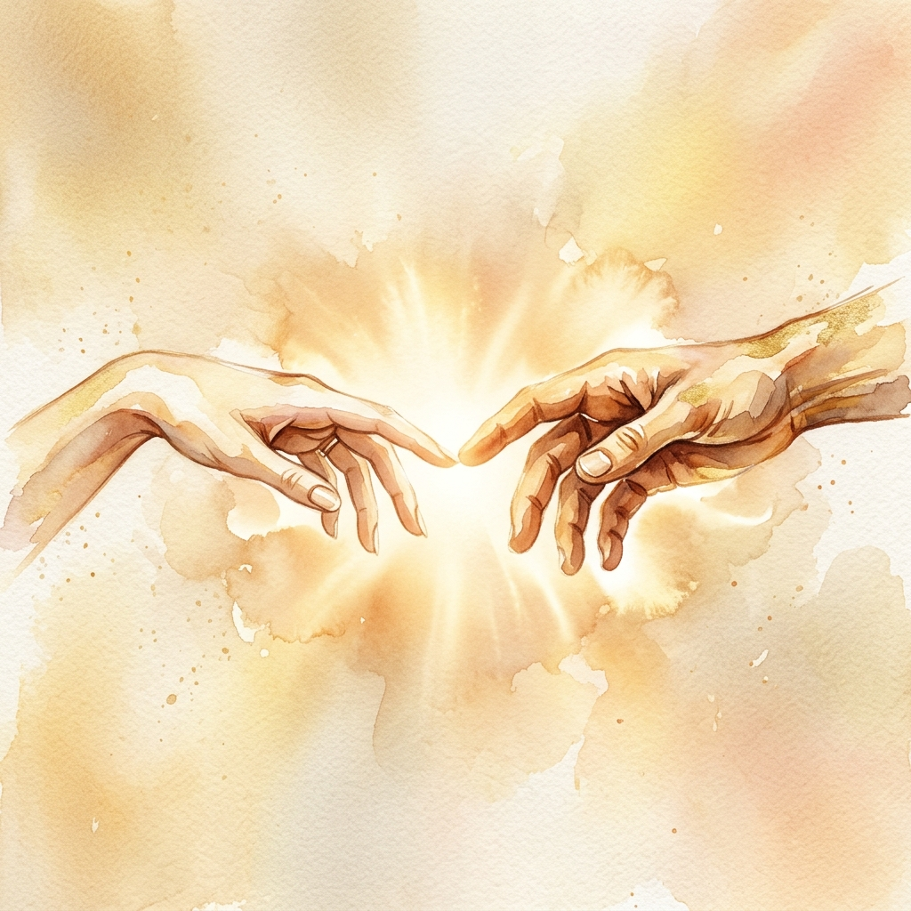

ആമേൻ
A Traditional Kanjirappally Story
☨
TAP TO BREAK SEAL
🔇
Scroll
With family blessings
Joel Francis Jose
&
Sandra Binoy
Fixation
ഉറപ്പീരു
12 years of holding hands.
12
വർഷങ്ങൾ · Years
📍 The Church — 7 Day Festival of Faith — വിശ്വാസോത്സവം
We sat on opposite sides of the table. We didn't talk. We didn't even like each other.
"Do you want a bun?" 🍞
"No, no, I don't."
That was the beginning of everything.
📍 The Road Below Her House — 6 PM
Her house sat 100 metres above the highway, at the top of a steep slope. Every evening, I stood on the road below, looking up — waiting.

She'd be on the swing. Looking at me. But not really looking.
📍 Friend's House Near Her House
I'd visit my friend, whose house was right beside hers. Through the elevation — I could see her window.

White curtains. Brown frame.
5, 6, 7 minutes.
Checking if her parents were watching.
📍 Saint Antony's Public School, Kanjirappally
For 11th and 12th, I left my school. Left my friends. Everything. I joined her school — just to see her.
Different buildings. Different departments. But I'd walk to her veranda. Walk past her classroom. One glance. That's all I needed.
📍 The Bus Stop
I'd wait at the bus stop. Not for the bus.
Just to see her get off.
📍 Subash Park, Kochi — Year 2 of College
Our first date. First hand-holding. First kiss.

We remember it till this day.
Our houses are 1 km apart.
Between us —
the church
.
Every meeting. Every glance. Every prayer.
The church was always in the middle.
12 വർഷത്തെ പ്രണയം.
സാക്ഷിയായി ആ പഴയ പള്ളി.
We are becoming one.
ഉറപ്പീരു
Fixation Ceremony
Joel Francis Jose
Son of T.C. Joseph & Tessy Mol Mathew
&
Sandra Binoy
Daughter of Binoy Abraham & Ranju Binoy
SCRATCH TO REVEAL DATE
23-05-26
🕡
6:30 PM
📍
Tharavad The Farmhouse
Kanjirappally, Kottayam
Followed by Dinner
📅 Save Date
📍 Directions
ആമേൻ
Amen.
"So be it."